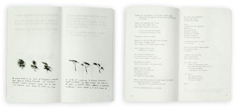

Das Kloster Am Rande der Stadt, Verlag, Die Arche, Zurich; (1981)  Esta vez la invención gráfica estuvo en una secuencia doble de lectura: el mismo texto dispuesto dos veces en el largo del cuadernillo. Existe una correspondencia tipográfica entre las dos versiones del poema en cuanto a la demora de su lectura, en virtud de la diferencia de intensidad, cuerpo e interlínea; por cuanto el que está dispuesto para ser leído primeramente, está ritmado e intercalado por dibujos de Alberto Cruz, está agrandado su cuerpo, restada su interlínea y atenuada su intensidad (casi como un himnario, que se lee hacia un atril) favoreciendo su demora para que cada frase aparezca y resuene; y el segundo está puesto de una sola vez, para ser leído posteriormente, con la tipografía achicada y ajustada al espacio simultáneo de la doble página, favoreciendo la continuidad y el sentido que aparece al leer el total de corrido, con sus pausas y silencios propios, siguiendo su tiempo interno. |